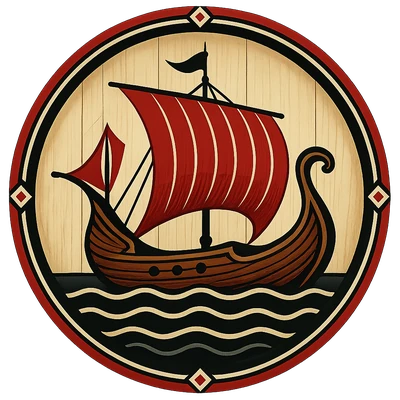
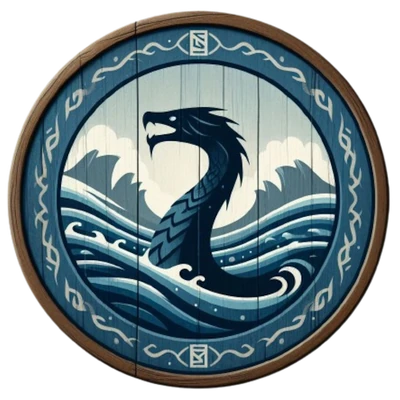
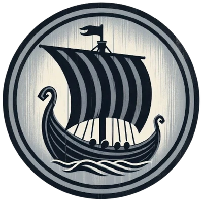
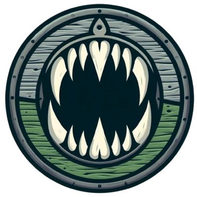
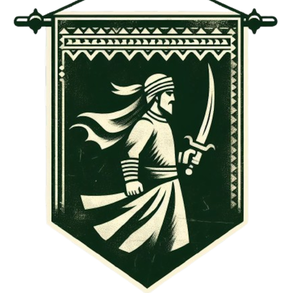
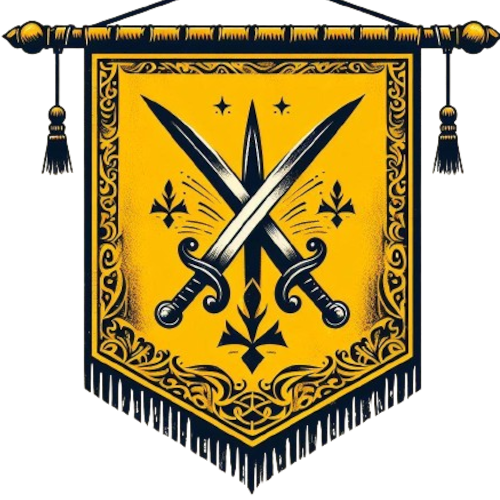
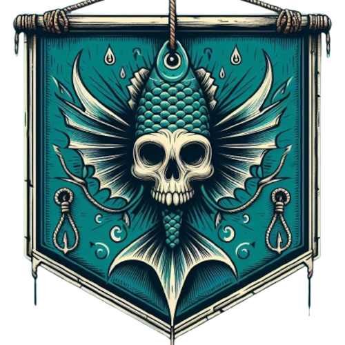

Die vier Großpiraten und ihre überlieferten Banden: ein Verzeichnis der Namen, Reviere und bekannten Taten. Die Akten verbinden den Almanach mit Fraktionsseiten und Ereignissen.
Die vier Großpiraten
Blutsegel Marodeure, Klauen des Leviathan, Schwarzblut Marodeure und Sirenenzahn stehen auf derselben Gliederungsebene. Benannte Unterbanden sind jeweils ihrer Großpiraten-Gruppierung zugeordnet.

Blutsegel MarodeureGroßpiraten · Vorbereitete Akte
Klauen des LeviathanGroßpiraten · 5 benannte Unterbanden
Schwarzblut MarodeureGroßpiraten · 9 benannte Unterbanden
SirenenzahnGroßpiraten · 3 benannte Unterbanden
Alle benannten Banden
Blutsegel Marodeure
Noch keine benannten Unterbanden.
Klauen des Leviathan
 Graubart Piratengroße Bande innerhalb der Klauen · Vorbereitete Akte
Graubart Piratengroße Bande innerhalb der Klauen · Vorbereitete Akte Trübwasser Hehlergroße Bande innerhalb der Klauen · Vorbereitete Akte
Trübwasser Hehlergroße Bande innerhalb der Klauen · Vorbereitete Akte Sturmbucht Schurkengroße Bande innerhalb der Klauen · Vorbereitete Akte
Sturmbucht Schurkengroße Bande innerhalb der Klauen · Vorbereitete Akte Doppelköder Piratengroße Bande innerhalb der Klauen · Vorbereitete Akte
Doppelköder Piratengroße Bande innerhalb der Klauen · Vorbereitete Akte Höllenpfortekleinere Bande · Vorbereitete Akte
Höllenpfortekleinere Bande · Vorbereitete Akte
Schwarzblut Marodeure
 Schwarzbucht MarodeureKapitän Skorviðr · Vorbereitete Akte
Schwarzbucht MarodeureKapitän Skorviðr · Vorbereitete Akte Blutegel Piratengroße Einzelbande · Vorbereitete Akte
Blutegel Piratengroße Einzelbande · Vorbereitete Akte Meeres Fledderergroße Einzelbande · Vorbereitete Akte
Meeres Fledderergroße Einzelbande · Vorbereitete Akte Silberne Handkleinere Bande · Vorbereitete Akte
Silberne Handkleinere Bande · Vorbereitete Akte Köder Piratenkleinere Bande · Vorbereitete Akte
Köder Piratenkleinere Bande · Vorbereitete Akte Weißpranken Gesindelkleinere Bande · Vorbereitete Akte
Weißpranken Gesindelkleinere Bande · Vorbereitete Akte FlutbeißerKapitän Tharn · Vorbereitete Akte
FlutbeißerKapitän Tharn · Vorbereitete Akte NebelschnitterKapitän Halrjarn · Vorbereitete Akte
NebelschnitterKapitän Halrjarn · Vorbereitete Akte ZungenfresserKapitän Vargund Tungungrifr · Vorbereitete Akte
ZungenfresserKapitän Vargund Tungungrifr · Vorbereitete Akte
Sirenenzahn

Wilde Korsarengroße Bande innerhalb der Sirenenzahn · Vorbereitete Akte
Flinke Hetzergroße Bande innerhalb der Sirenenzahn · Vorbereitete Akte
Sirenenschändergroße Bande innerhalb der Sirenenzahn · Vorbereitete Akte
In den Chroniken
Der Raubzug durch Leitheach · Winter 1733
Jede Bandenakte verlinkt ihr vorbereitetes Almanach-Modul und die entsprechende Fraktionsseite. Fehlende Namen, Stützpunkte oder Biografien bleiben offen.